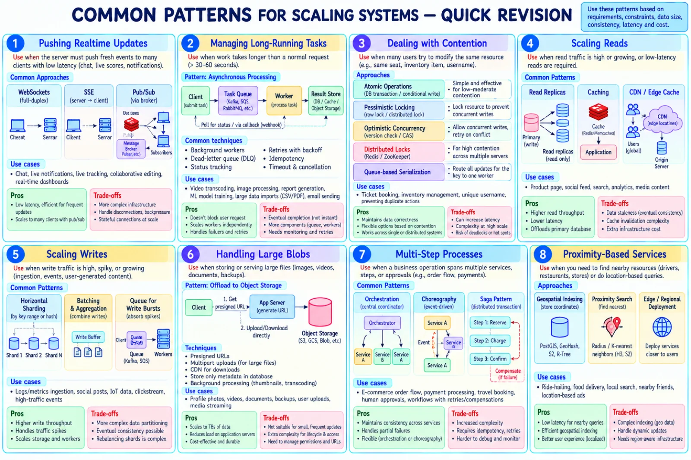
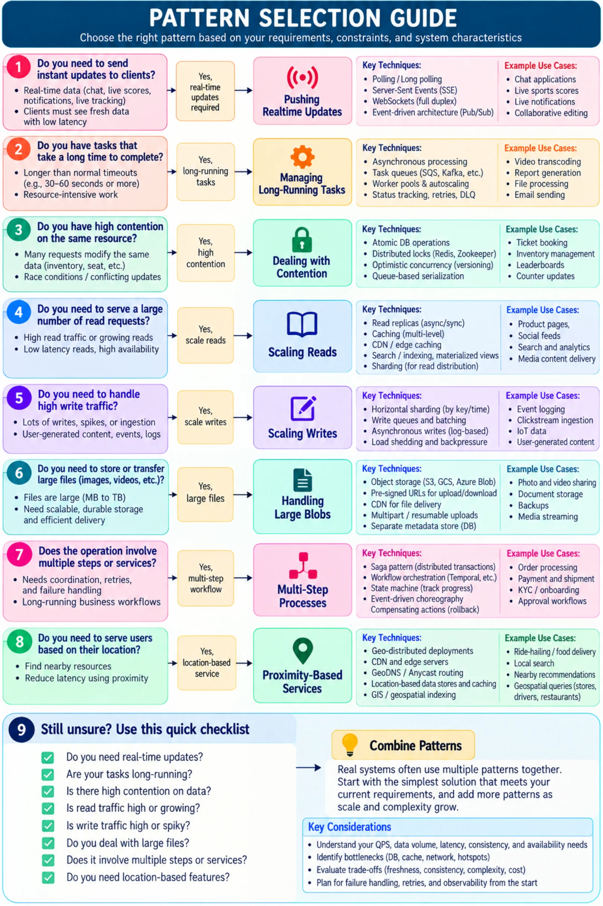

Topic · Common Patterns
Common Patterns for Scaling Systems
Eight recurring problems and their go-to patterns - pick based on requirements, constraints, data size, consistency, latency, and cost.




Quick Revision
- Realtime updates → WebSockets, SSE, pub/sub. Trade-off: stateful connections, backpressure.
- Long-running tasks (> 30-60 s) → queue + workers + result store; retries, DLQ, idempotency, status polling/webhook.
- Contention → atomic/conditional writes, pessimistic or optimistic locking, distributed locks, queue serialization per key.
- Scaling reads → read replicas, caching, CDN/edge. Trade-off: staleness, invalidation.
- Scaling writes → sharding, batching/aggregation, queues for bursts. Trade-off: partitioning, rebalancing.
- Large blobs → object storage + presigned URLs, multipart, CDN; DB stores metadata only.
- Multi-step processes → orchestration, choreography, sagas with compensation.
- Proximity → geospatial indexes (PostGIS, geohash, S2, R-tree), k-nearest, edge/regional deployment.